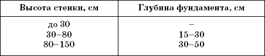
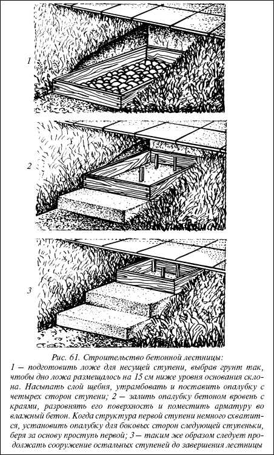
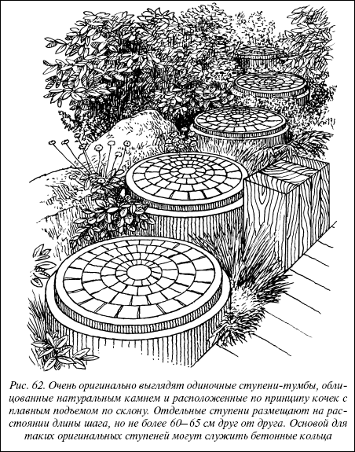
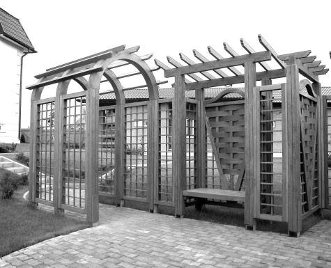
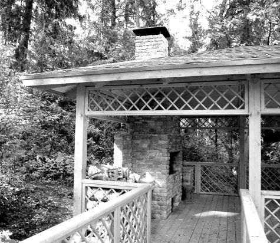
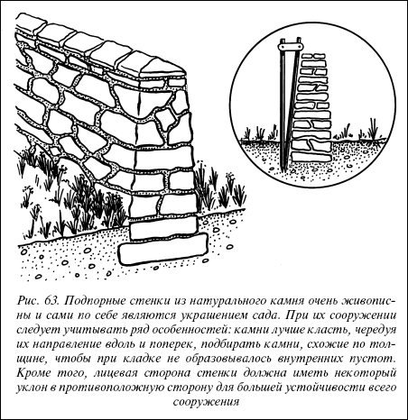
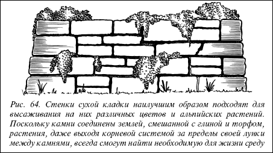
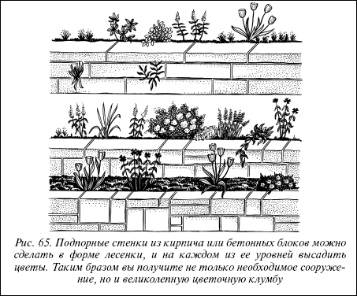
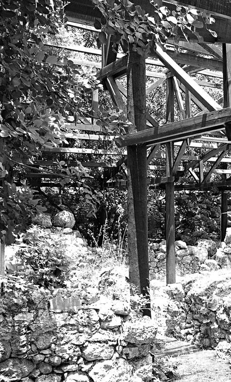

Подпорные стенки.

Иногда, например, нехватка места не позволяет сделать откос с пологим склоном. В этих случаях его делают более крутым, дополнительно укрепив, чтобы избежать разрушения. Одним из способов укрепления откоса или его замены является подпорная стенка, которая удерживает в равновесии земляные массы верхнего уровня выше расположенного участка и предотвращает их оползание.
Для постройки подпорных стенок используют бетон, кирпич, природный камень, гранитные валуны, булыжник, плитняк, бой гранитных плит и другие местные материалы. Стенки из бетона облицовывают галькой, крупным булыжником, колотым камнем, плиткой или другими недорогими отделочными материалами.
Таблица 1
Расчет глубины фундамента относительно высоты подпорной стенки


Рис. 61. Строительство бетонной лестницы:
1 – подготовить ложе для несущей ступени, выбрав грунт так, чтобы дно ложа размещалось на 15 см ниже уровня основания склона. Насыпать слой щебня, утрамбовать и поставить опалубку с четырех сторон ступени; 2 – залить опалубку бетоном вровень с краями, разровнять его поверхность и поместить арматуру во влажный бетон. Когда структура первой ступени немного схватится, установить опалубку для боковых сторон следующей ступеньки, беря за основу проступь первой; 3 – таким же образом следует продолжать сооружение остальных ступеней до завершения лестницы

Рис. 62. Очень оригинально выглядят одиночные ступени-тумбы, облицованные натуральным камнем и расположенные по принципу кочек с плавным подъемом по склону. Отдельные ступени размещают на расстоянии длины шага, но не более 60–65 см друг от друга. Основой для таких оригинальных ступеней могут служить бетонные кольца
На поверхности стенки из бетона можно выполнить какой-либо рисунок или мозаичный узор, сделав ее таким образом сильным декоративным элементом в композиции сада.


Подпорную стенку можно также построить из ряда бетонных столбов, врытых на определенную глубину в землю и установленных на бетонном фундаменте. Такая стенка очень прочна, практична и долговечна, ее можно поставить для укрепления достаточно крутого склона, так как она способна выдержать большую нагрузку земляной массы. Бетонные столбы можно заменить просмоленными и обработанными специальным консервирующим составом деревянными бревнами (кругляком) или брусом.
Внимание
При строительстве подпорных стенок из бруса или кругляканеобходимо учитывать ряд особенностей. Деревянные столбы должны уходить в землю на 1/3 или 1/2 своей длины. Для них выкапывают ямы глубиной 60–80 см. Вниз засыпается слой гравия толщиной 20 см в качестве фундамента и одновременно дренажа, в результате чего древесина предохраняется от загнивания. Бревна или брус устанавливаются плотно друг к другу и затем на уровне 40 см от их длины фиксируются тощим бетоном. Сверху бревна обвязывают проволокой, с тем чтобы они не смещались. С обратной стороны их обкладывают кровельным толем или другим герметизирующим материалом, чтобы во время дождя земля между отдельными деревянными столбами не вымывалась. После этого засыпать землю и утрамбовать.
Способы строительства зависят от предназначения и высоты стенок. Для повышения их долговечности применяют фундаменты, которые могут иметь разную толщину и глубину в зависимости от вида стенки, рода грунта, на котором она должна быть построена. Для стенок высотой до 30 см фундамент не нужен, для стенок высотой от 30 до 80 см фундамент должен иметь глубину от 15 до 30 см, при высоте стенки от 80 до 150 см фундамент делают глубиной от 30 до 50 см. Фундамент делают из гравия, щебня, песка, возможно, уплотненных тяжелой глиной или скрепленных цементным раствором.
Соорудить подпорную стенку из кирпича или небольших бетонных заготовок совсем не сложно.


А вот строительство стенок из камня имеет некоторые особенности. Приступая к укладке, вдоль линии фундамента укладывают необходимый камень, чтобы не тратить время на его подноску в ходе работы, а в подготовленной под фундамент яме на высоте 20 см от дна протягивают тонкую проволоку для укладки камня по прямой линии. Укладывают камень так, чтобы гладкая сторона касалась проволоки, а между камнями оставалось минимальное свободное пространство. После укладки одного слоя камня на толщину стенки свободное пространство заливают подготовленным цементным раствором.
На заметку
Стенки из природного камня устанавливаются на глубину 20–40 см на слой гравия, служащего одновременно фундаментом. В условиях водопроницаемой почвы в качестве каменного основания используется ряд крупных камней, которые наполовину утоплены в почву. Ширина каменного основания должна достигать V3 высоты стенки, но, как минимум, около 30 см. При очень рыхлой или тяжелой почве рекомендуется глубина до 40 см и широкий фундамент из готового бетона. Уложенные камни образуют наклон 10–15 %, с тем чтобы могла стекать вода. Стенка после постройки со своей тыльной части должна засыпаться гравием и щебнем.

Рис. 63. Подпорные стенки из натурального камня очень живописны и сами по себе являются украшением сада. При их сооружении следует учитывать ряд особенностей: камни лучше класть, чередуя их направление вдоль и поперек, подбирать камни, схожие по толщине, чтобы при кладке не образовывалось внутренних пустот. Кроме того, лицевая сторона стенки должна иметь некоторый уклон в противоположную сторону для большей устойчивости всего сооружения
Толщина стенки зависит от ее высоты, а также от вида используемого камня. При высоте стенок от 40 см средняя толщина их составляет до 15 см, при высоте 40–80 см – от 20 до 30 см. Камни должны быть примерно одинаковыми, их укладывают в длину или поперек, избегая при этом слишком явных соединительных швов и перекрестных соединений. Для прочности передняя сторона стенки должна быть ровной и несколько наклоненной, то есть ее верх отодвинут назад относительно основания на 5-20 см в зависимости от высоты и толщины стенки.

Рис. 64. Стенки сухой кладки наилучшим образом подходят для высаживания на них различных цветов и альпийских растений. Поскольку камни соединены землей, смешанной с глиной и торфом, растения, даже выходя корневой системой за пределы своей лунки между камнями, всегда смогут найти необходимую для жизни среду
Красиво и оригинально выглядят так называемые цветочные стенки – подпорные стенки, оформленные цветами и растениями, подходящими для альпинариев. Для этого в процессе кладки предусматриваются щели между камнями на внешней стороне подпорной стенки. Щели заполняют землей и высаживают в них растения.

Рис. 65. Подпорные стенки из кирпича или бетонных блоков можно сделать в форме лесенки, и на каждом из ее уровней высадить цветы. Таким образом вы получите не только необходимое сооружение, но и великолепную цветочную клумбу
Щели между камнями, предназначенные для посадки растений, следует размещать не в правильном порядке, а произвольно, на разной высоте и разном расстоянии от краев, чтобы стенка выглядела естественно.

Уход за цветочными стенками заключается в поправке камней и подсыпке недостающей земли в щелях между камнями (лучше весной). Нужно также регулярно выпалывать сорняки.
Внимание
Особенно подходят для создания цветочных композиций и альпийской растительности невысокие стенки так называемой сухой кладки. При их строительстве камни соединяют дерновой землей, смешанной с глиной и торфом. Щели, оставленные на внешней стороне стенки, заполняют соответствующей земляной смесью, состав которой готовят в зависимости от требований высаживаемых растений.
Такие стенки очень экологичны, так как для скрепления их фрагментов не используются химические вещества. В результате использования швов раскрытого типа создаются хорошие условия для малых форм жизни, таких как теплолюбивые ящерицы, жабы, кузнечики, шмели и дикие пчелы.